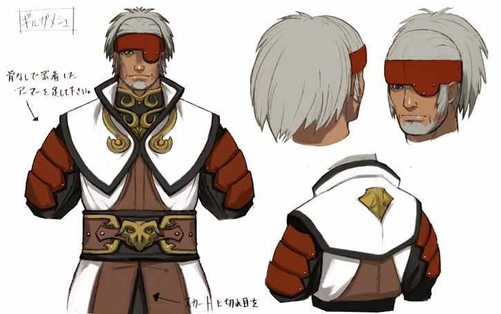
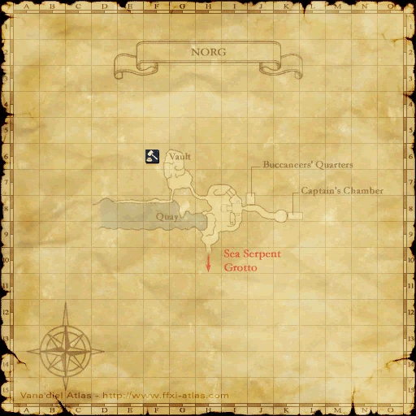
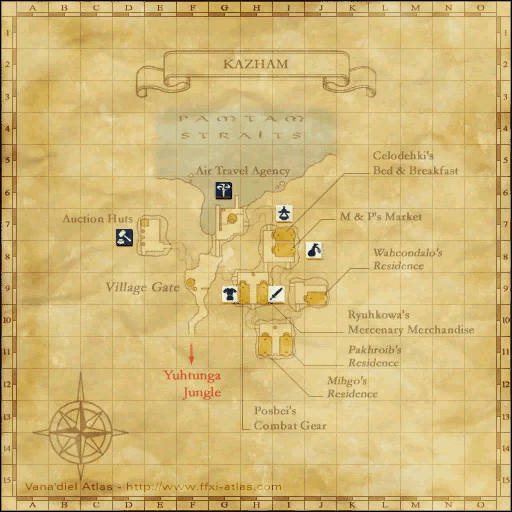

Before you begin
- Complete The New Frontier.
Starting point
Oaken Door · Norg · K-8
People in this mission


Walkthrough
- Go upstairs in Norg and follow the corridor to the Oaken Door at K-8.
- Examine the door, agree to open it, and watch the meeting with Gilgamesh. Check that Kazham’s Chieftainess is now active.
Completion and reward
Story progression; no separate item reward.
Area maps
Open a zone below, then select a map to enlarge it. Match the named floors and grid coordinates in the steps; these are reference area maps, not a live position tracker.
Norg



Kazham



Zone guides
References
Steps are an original summary of the linked walkthrough and reviewed source. Other servers’ bonus rewards are not included. How to read requirements, waits and battlefield notes.
Additional level-75 reference
| Previous Mission | Next Mission |
| The New Frontier | Kazham's Chieftainess |
Walkthrough
- Go to L-8 and click on the "Oaken Door" to get a cutscene with Gilgamesh.
Adapted from Eden Wiki: Welcome t'Norg · Contributors and history · CC BY-SA 4.0. Revision 8911. Layout, links and optional background text adapted for Zenith.